Rear Suspension Member Sub-assembly Installation |
| 1. Install Rear Suspension Member Sub-assembly |
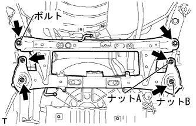 |
Install the rear suspension member via the rear suspension member stopper lower with the 2 bolts and 4 nuts.
| 2. Temporarily Tighten Upper Control Arm Assembly Rear LH |
 |
Install the upper control arm assembly rear LH to the suspension member, and temporarily tighten it with the bolt and nut.
| 3. Temporarily Tighten Upper Control Arm Assembly Rear RH |
| 4. Temporarily Tighten Rear Suspension Arm Assembly NO.2 LH |
 |
Temporarily tighten the rear suspension arm assembly No.2 LH to the rear suspension member with the bolt and nut.
| 5. Temporarily Tighten Rear Suspension Arm Assembly NO.2 RH |
| 6. Install Rear Coil Spring Insulator Lower LH |
| 7. Install Rear Coil Spring Insulator Lower RH |
| 8. Install Rear Coil Spring Insulator Upper LH |
| 9. Install Rear Coil Spring Insulator Upper RH |
| 10. Install Coil Spring Rear LH |
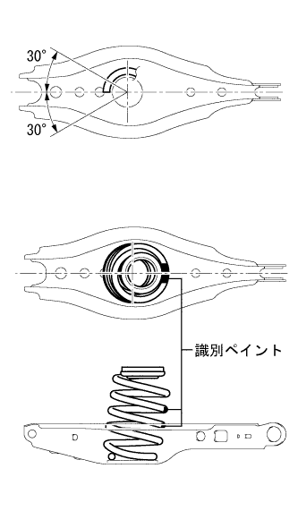 |
Install the rear coil spring LH to the rear suspension arm assembly No.2 LH.
| 11. Install Coil Spring Rear RH |
| 12. Temporarily Tighten Shock Absorber Assembly Rear LH |
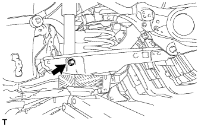 |
Gradually raise the jack with a wooden block in between, and temporarily tighten the rear shock absorber assembly LH with the bolt and nut.
| 13. Temporarily Tighten Shock Absorber Assembly Rear RH |
| 14. Install Rear Axle Carrier LH |
 |
With a block of wood in between, jack up the rear suspension arm assembly No.2 until it is horizontal, and hold the rear axle carrier.
 |
Install the rear axle carrier to the upper control arm assembly rear LH, and temporarily tighten the bolt and nut.
| 15. Install Rear Axle Carrier RH |
| 16. Temporarily Tighten Rear Suspension Arm Assembly NO.2 LH |
 |
Install the rear suspension arm assembly No.2 LH to the rear axle carrier, and temporarily tighten the bolt and nut.
| 17. Temporarily Tighten Rear Suspension Arm Assembly NO.2 RH |
| 18. Install Trailing Arm Assembly Rear LH |
 |
Install the trailing arm assembly rear to the rear axle carrier with the 2 bolts.
| 19. Install Trailing Arm Assembly Rear RH |
| 20. Install Stabilizer Bar Rear |
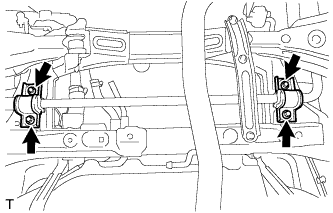 |
Install the 2 rear stabilizer bar brackets No.1 and the rear stabilizer bar to the rear suspension member with the 4 bolts.
| 21. Install Rear Stabilizer Link Assembly LH |
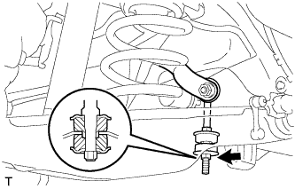 |
Temporarily tighten the rear stabilizer link assembly LH and 2 rear stabilizer cushions with the nut as shown in the illustration.
 |
Install the nut.
Fully tighten the nut.
| 22. Install Rear Stabilizer Link Assembly RH |
| 23. Install Rear Suspension Member Brace LH |
 |
Install the rear suspension member brace LH with the 3 bolts.
| 24. Install Rear Suspension Member Brace RH |
| 25. Height Control Sensor Sub-assembly Rear Installation |
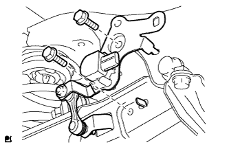 |
Install the height control sensor assembly (rear) with the 2 bolts.
 |
Connect the connector and engage the clamp.
| 26. Install Rear Axle Hub & Bearing Assembly LH |
 |
Install the rear axle hub & bearing assembly LH to the rear axle carrier with the 4 bolts.
| 27. Install Rear Axle Hub & Bearing Assembly RH |
| 28. Install Rear Disc LH |
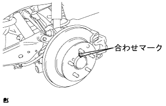 |
) Align the matchmarks on the disc and axle hub, and install the disc.
| 29. Install Rear Disc RH |
| 30. Install Rear Disc Brake Caliper Assembly LH |
 |
Install the rear disc brake caliper assembly LH with the 2 bolts.
| 31. Install Rear Disc Brake Caliper Assembly RH |
| 32. Connect Parking Brake Cable Assembly NO.3 |
 |
Pass parking brake cable assembly No.3 through the guide of the rear disc brake cylinder assembly LH.
 |
Connect the cable end to the operating lever of the rear disc brake cylinder assembly LH.
| 33. Connect Parking Brake Cable Assembly NO.2 |
| 34. Install Parking Brake Lever Protector |
 |
Install the parking brake lever protector to the parking brake cable assembly No.3.
| 35. Skid Control Sensor Wire Connection |
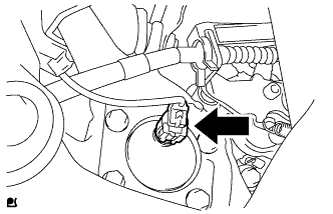 |
Connect the skid control sensor wire connector to the skid control sensor.
| 36. Install Exhaust Pipe Assembly Center |
Compression Spring Inspection
 |
Using a vernier caliper, measure the free length of the compression spring.
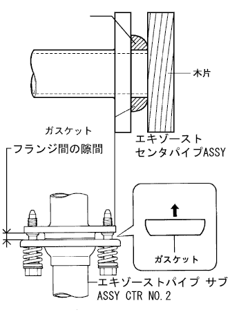 |
Install the gasket.
Insert a new gasket into the center pipe assembly by hand as far as it will go.
Place a piece of wood against the gasket and, using a hammer, gradually tap it in until it reaches the flange end face of the exhaust center pipe assembly.
 |
Install the exhaust center pipe assembly with 2 bolts and 2 compression springs.
| 37. Install Exhaust Tail Pipe Assembly |
Compression Spring Inspection
|
Using a vernier caliper, measure the free length of the compression spring.
 |
Install the gasket.
Insert a new gasket into the exhaust center pipe assembly as far as it will go by hand.
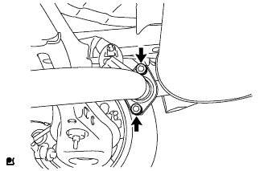 |
Install the exhaust tail pipe assembly with 2 bolts and 2 compression springs.
| 38. Install Front Floor Brace Center |
 |
Install the 4 bolts and the front floor brace center.
| 39. Install Rear Tire |
| 40. Stabilize Suspension |
| 41. Fully Tighten Shock Absorber Assembly Rear LH |
 |
Hold the nut and turn the bolt to fully tighten the rear shock absorber assembly LH.
| 42. Fully Tighten Shock Absorber Assembly Rear RH |
| 43. Fully Tighten Upper Control Arm Assembly Rear LH |
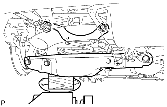 |
With a block of wood in between, jack up the rear suspension arm assembly No.2 LH to the standard vehicle height condition as shown in the illustration to apply load to the rear suspension.
 |
Tighten the upper control arm assembly rear LH with the 2 bolts and 2 nuts.
| 44. Fully Tighten Upper Control Arm Assembly Rear RH |
| 45. Fully Tighten Rear Suspension Arm Assembly NO.2 LH |
 |
Fully tighten the rear suspension arm assembly No.2 LH with the 2 bolts.
| 46. Fully Tighten Rear Suspension Arm Assembly NO.2 RH |
| 47. Fully Tighten Rear Suspension Arm Assembly NO.1 LH |
 |
Fully tighten the bolt of the rear suspension arm assembly No.1 LH (rear suspension member side).
| 48. Fully Tighten Rear Suspension Arm Assembly NO.1 RH |
| 49. Install Battery Negative Terminal |
| 50. Setting Procedure When Disconnecting/Reconnecting Battery Terminal |
)| 51. Inspect for Exhaust Gas Leaks |
Check that there are no exhaust gas leaks from the locations shown in the illustration (exhaust pipe joints and each sensor installation area).

| 52. Inspect and Adjust Rear Wheel Alignment |
)| 53. Headlight Leveling ECU Assembly Initialization Procedure |
)| 54. Preparation for Headlight Aiming |
)Adjust the tire pressure to the specified value.
Have 1 person sit in the driver seat.
Start the engine and keep the battery in a charging condition.
 |
Set the leveling switch dial to 0. (Halogen type headlight)
| 55. Headlight Aiming Adjustment (Using Low Beam Tester) |
Set the distance between the tester and the headlight lens to the tester's specified value.
Position the tester so that it squarely faces the vehicle.
 |
Set up the headlight tester.
Set the angle adjustment knobs of the tester to 10cm downward and 0cm left/right.
 |
Align the condenser lens of the tester with the center of the headlight.
| Mark | |
|---|---|
| A | Low Beam Bulb Center |
| B | High Beam Bulb Center |
Take measures so that the light from the other headlight does not affect the measurement.
Turn on the headlights on low beam.
Adjust the low beam aim according to the instruction manual of the headlight tester used.

| 56. Headlight Luminous Intensity Inspection (Using Low Beam Tester) |
After adjusting the aim, inspect the luminous intensity with the headlight tester.
| 57. Headlight Aiming Adjustment (Using Low Beam Screen) |
Prepare a piece of thick white paper.
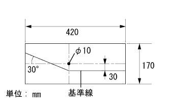 |
Prepare an aiming screen as shown in the illustration. (Discharge type headlight)
 |
Prepare an aiming screen as shown in the illustration. (Halogen type headlight)
 |
Set the distance between the tester and headlight lens to 3m.
Position the tester so that it squarely faces the vehicle.
|
Set up the headlight tester.
Align the center of the tester condenser lens with the headlight center.
| Mark | |
|---|---|
| A | Low Beam Bulb Center |
| B | High Beam Bulb Center |
Align the center hole of the adjustment screen with the center of the tester condenser lens, and attach it with tape or equivalent.
Turn on the headlights on low beam.
If it deviates significantly from the reference line, adjust the low beam aim so that the cut-off line aligns with the reference line.
| 58. Headlight Luminous Intensity Inspection (Using Low Beam Screen) |
Set the distance between the tester and the headlight lens to the tester's specified value.
Position the tester so that it squarely faces the vehicle.
|
Set up the headlight tester.
Set the angle adjustment knobs of the tester to 11cm downward and 23cm to the left.
|
Align the condenser lens of the tester with the center of the headlight.
| Mark | |
|---|---|
| A | Low Beam Bulb Center |
| B | High Beam Bulb Center |
Take measures so that the light from the other headlight does not affect the measurement.
Turn on the headlights on low beam.
After aiming adjustment, inspect with the headlight tester.
| 59. Headlight Aiming Adjustment (Using High Beam Tester) |
Set the distance between the tester and the headlight lens to the tester's specified value.
Position the tester so that it squarely faces the vehicle.
|
Set up the headlight tester.
Set the angle adjustment knobs of the tester to 1/5cm of the headlight center height downward and 0cm for both left and right. (LH headlight)
Set the angle adjustment knobs of the tester to 1/5cm of the headlight center height downward and 5cm to the left. (RH headlight)
|
Align the condenser lens of the tester with the headlight center.
| Mark | |
|---|---|
| A | Low Beam Bulb Center |
| B | High Beam Bulb Center |
Take measures so that the light from the other headlight does not affect the measurement.
Turn on the headlights with high beam.
Adjust the high beam aim according to the handling procedure of the headlight tester used.
| 60. Headlight Luminous Intensity Inspection (Using High Beam Tester) |
After adjusting the aim, inspect the luminous intensity with the headlight tester.